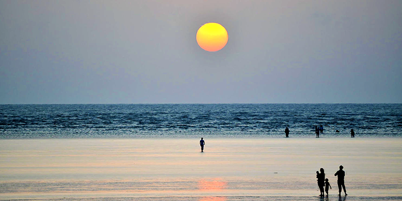

Dadra and Nagar Haveli and Daman and Diu
"Union of Traditions and Tranquility"
Quick Facts
Popular Tourist Attractions
Diu Fort
A majestic Portuguese fort overlooking the Arabian Sea.
Devka Beach
Popular for sunsets, long walks, and quiet seafront views.
Silvassa
Known for tribal heritage, wildlife sanctuary, and museums.
Nature & Wildlife
The region hosts the Vasona Lion Safari and Satmaliya Deer Park with diverse flora and fauna.
Famous Personalities
- Kishore Kadam: Acclaimed Marathi and Hindi actor from Silvassa.
Local Handicrafts
Known for Warli paintings, bamboo work, leather craft, and handmade textiles.
Climate
Hot and humid coastal weather with moderate rainfall during monsoon and pleasant winters.
Culture & Festivals
Festivals
Celebrations of Navratri, Diwali, and Portuguese-influenced Catholic events.
Food
Seafood, fish curry, and traditional Gujarati dishes dominate the cuisine.
Dance & Music
Folk dances like Tarpa and Dhol performances showcase tribal rhythm.
Did You Know? Dadra and Nagar Haveli and Daman and Diu were merged into a single union territory in 2020.
Note: Information may be subject to updates. Kindly notify us of any discrepancies.